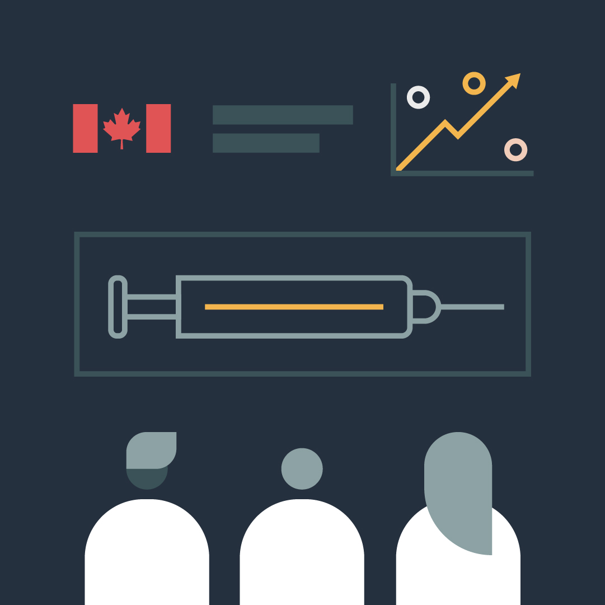
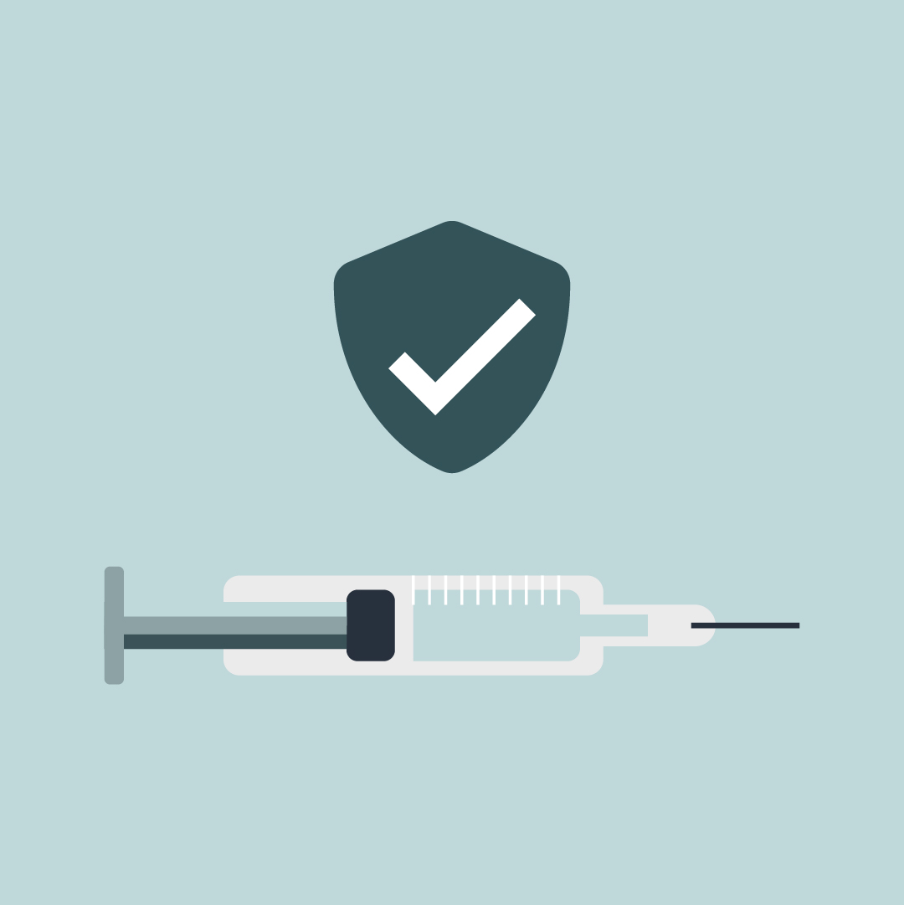

Vaccines and treatments for COVID-19: Progress
On this page
-
Having safe and effective COVID-19 vaccines available will be an important tool to help with the long-term management of COVID-19. Health Canada is prioritizing the review of all COVID-19 drugs and vaccines.
Creating a new vaccine can take years. However, the development of vaccines for COVID-19 is progressing quickly for many reasons, including:
- advances in science and technology
- international collaboration among scientists, health professionals, researchers, industry and governments
- increased dedicated funding
-
Exploratory
Scientists develop a potential vaccine
-
Preclinical
Scientists conduct lab and animal studies before testing on humans
-
Phase 1 trials
Safety, dosage, side effects
-
Phase 2 trials
Efficacy, safety, dosage.
-

Phase 3 trials
Efficacy, safety, dosage.
-
Health Canada’s independent drug authorization process is recognized around the world for its high standards and rigorous review. Our decisions are based only on scientific and medical evidence showing that vaccines are safe and effective. The benefits must also outweigh any risks.
-
Marketing a vaccine in Canada
To market a vaccine in Canada, the manufacturer must file an application to Health Canada. They must use one of the following regulatory processes:
- the interim order for COVID-19 drug
authorization
- this process was set up to respond to the urgent need for COVID-19 drugs during the pandemic
- the Food and Drug Regulations
- the interim order for COVID-19 drug
authorization
-
About the fast-tracked review process
Health Canada has put in place a fast-tracked review process to assess COVID-19 vaccines. If manufacturers apply through the interim order process, we’re able to start the review process right away. We are also able to review any new evidence as it becomes available, instead of waiting until all studies are completed. We’ve dedicated more scientific resources to complete these reviews so that they’re done quickly but without cutting corners.
A similar process was used in 2009 to review and authorize the H1N1 pandemic vaccine.
We’re also working with international regulators to collaborate on the review process to get vaccines to market as quickly as possible. However, Health Canada will always make independent, science-based decisions that are in the best interest of the public.
As for all vaccines and treatments that are authorized in Canada, we’ll review the evidence and scientific data. We’ll then decide whether to authorize the COVID-19 vaccine and will only do so when the evidence shows that the vaccine:
- is safe, effective and of good quality and
- demonstrates that the benefits outweigh the risks
These measures will help make safe and effective vaccines and treatments available faster in Canada.
-
-

Scientific review
Teams of Health Canada experts conduct a thorough and independent review of all vaccine data
-

Approval
Health Canada approves a vaccine if it is safe, it works, it meets manufacturing standards, andthe benefits outweigh the risks.
-

Distribution
Governments coordinate the purchase, logistics and distribution of vaccines across Canada
-

Vaccination
All Canadians have access to the vaccine
Vaccine development
Reviewing and authorizing vaccines
Reviewing and authorizing treatments
There are also potential COVID-19 treatments that are being assessed in clinical trials. Find out about COVID-19 treatments that are authorized in Canada.
Health Canada is fast-tracking the review of COVID-19 treatments by using similar review processes as those for vaccines. Like vaccine authorizations, Health Canada will always make treatment authorization decisions based on the best scientific evidence.
Related links
- Vaccines for children
- Vaccination for adults
- Vaccine safety, concerns and possible side effects
- What you need to know about the COVID-19 vaccine for Canada (poster)
- Regulating vaccines for human use in Canada
- Health Canada’s regulatory response to COVID- 19